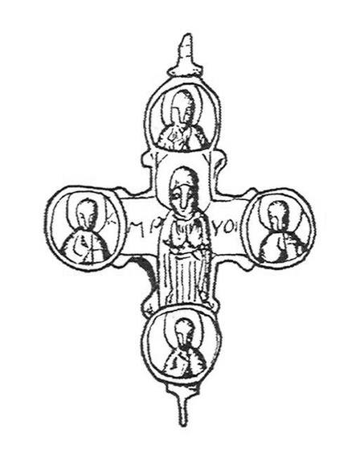
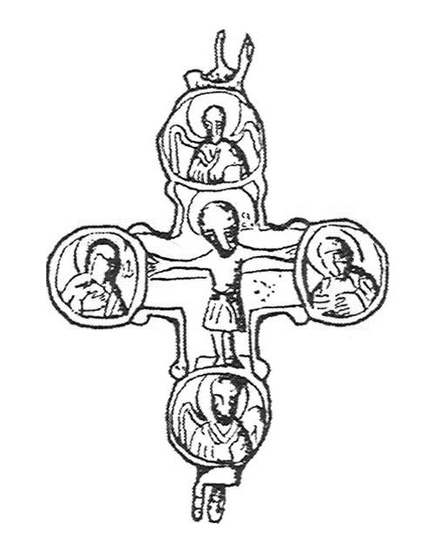

Catalog › CE-0534 · IAH2007-2-2
Encolpion bivalv, Mușkativka (Рис. 2, 2)
prima jumătate a sec. XIII (1201–1250) · Mușkativka, regiunea Ternopil, raionul Borșciv, Ucraina
double-sided reliquary cross (enkolpion); prima jumătate a c. XIII (1201–1250); found at Mușkativka, regiunea Ternopil, raionul Borșciv, Ucraina.




Identificare
- Categorie
- Encolpion bivalv (relicvar)
- Tehnică
- Turnare în relief
- Dimensiuni
- Î 81 × L 56 mm
Iconografie
- Avers
- Maica Domnului Orantă; Evangheliști în medalioane
- Descriere avers
- Valva superioară: Maica Domnului «Assunta» (cu palmele deschise), în veșmânt tradițional; lângă figură literele «МР» și «УО». În patru medalioane, evangheliști cu nimb, cu mâna dreaptă ridicată în binecuvântare și Evanghelia închisă în stânga. Chipul și cutele veșmântului sunt bine păstrate.
- Revers
- Sf. Ioan; Sf. Arhanghel Mihail
- Descriere revers
- Răstignirea în centru, cu capul mare înclinat disproporționat spre dreapta, nimb deasupra capului, un brâu lung de la talie la genunchi, picioarele pe un suport dreptunghiular; brațele, cu degetele bine marcate, ajung la medalioane, pe fundalul lemnului crucii. În medalioanele brațului orizontal: Maica Domnului și Sf. Ioan, fără inscripții; în cele ale brațului vertical: arhanghelii Mihail (mâna dreaptă ridicată în binecuvântare) și Gavriil (mâinile pe piept), cu nimb.
- Inscripții
- МР, УО (lângă Maica Domnului)
Datare și atribuire
- Datare
- prima jumătate a sec. XIII (1201–1250)
Descoperire
- Localitate
- Mușkativka
- Regiune
- regiunea Ternopil, raionul Borșciv
- Țară
- Ucraina
- Context
- Necunoscut
- Coordonate
- 48.8110° N, 26.0992° E
- Precizia locului
- Doar localitatea
Păstrare și referințe
- Bibliografie
- М. Ягодинська, Нові культові речі з давньоруських пам’яток Західного Поділля, în „Матеріали і дослідження з археології Прикарпаття і Волині”, 11, 2007, p. 346–357 [Ягодинська 2007], p. 347, Рис. 2, 2, reprodusă la Рис. 2, 2 (p. 350).
- Figura
- Рис. 2, 2
- Planșe
- Ягодинська 2007, p. 350
- Analogii
- Encolpioane din Bulgaria (Дончева-Петкова 1985, p. 53, fig. 8), Kiev (Пекарська, Пуцко 1989, p. 90, fig. 4, 1–2) și regiunea Volgăi (Полубояринова 1978, p. 64, fig. 2a, 2b).
- Observații
- Valvele sunt păstrate separate, neunite prin ureche. Autoarea numește valva superioară pe cea cu Maica Domnului, iar Răstignirea se află pe «partea din spate». Dimensiuni 8,1×5,6 cm; nu se precizează dacă includ urechea. Arhanghelul Gavriil nu figurează în lista de icoane a bazei. Colecția piesei nu este precizată. Material: aliaj de cupru, fără precizare suplimentară. Coordonate: ale localității (aproximative), nu date în sursă.
Citare: Corpus Encolpiorum, CE-0534, Encolpion bivalv, Mușkativka (Рис. 2, 2), --root/piese/IAH2007-2-2/ (accesat 2026-10-17).